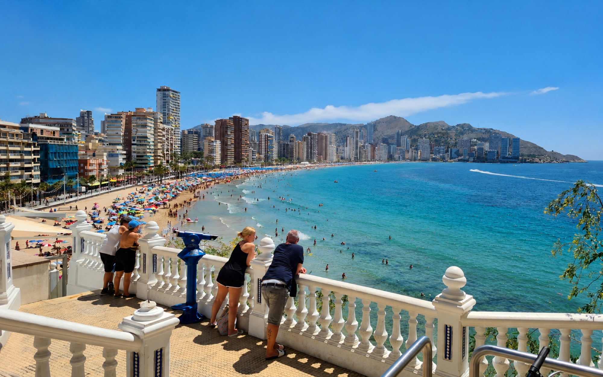
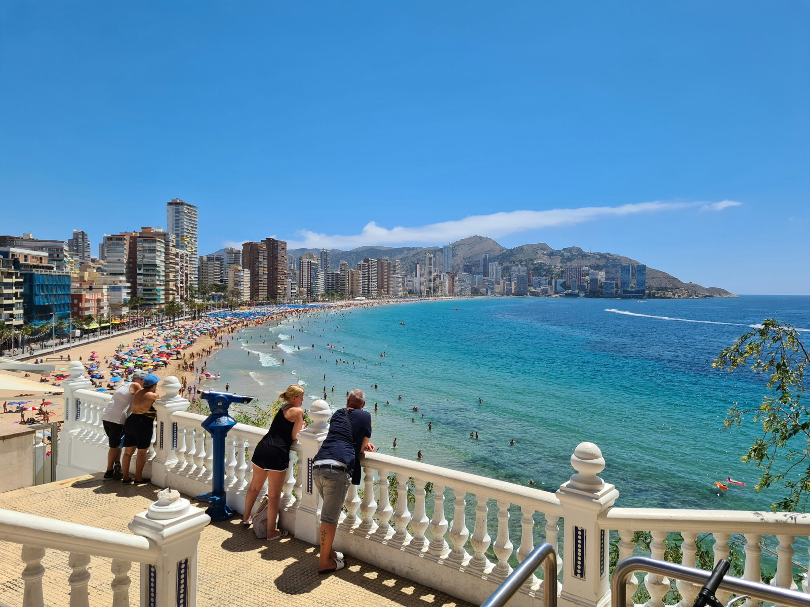
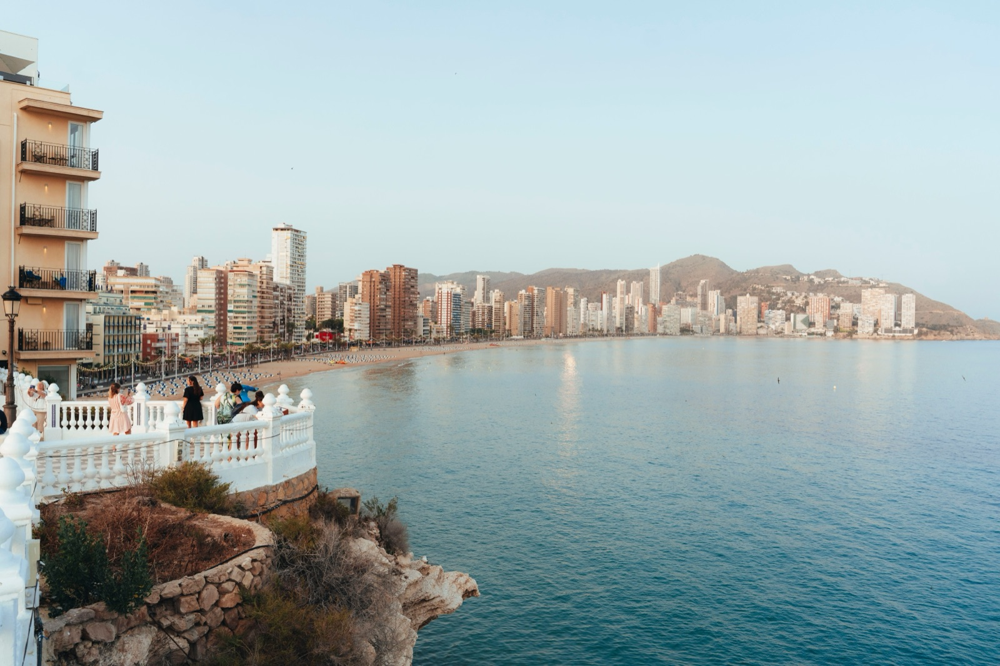
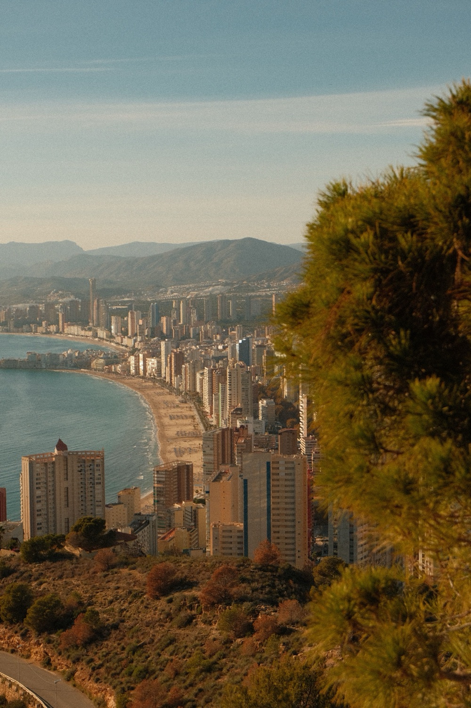
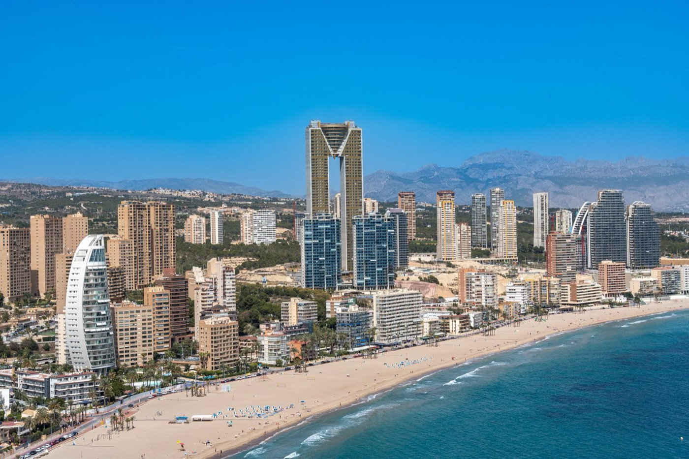
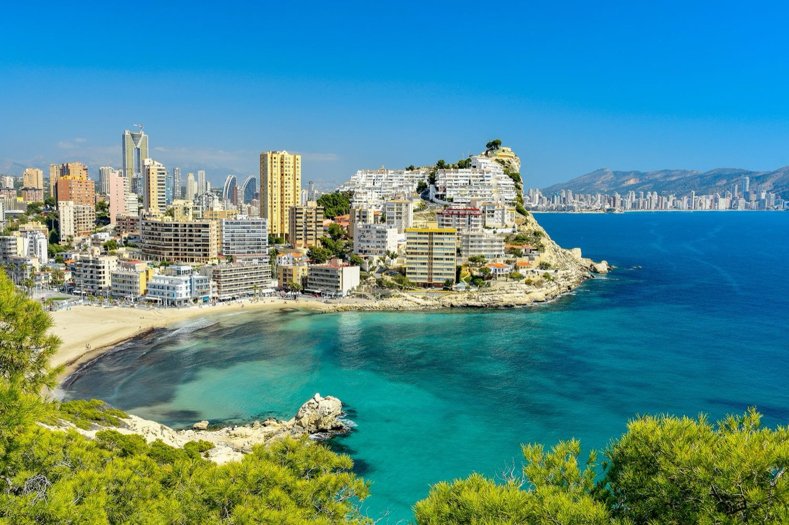
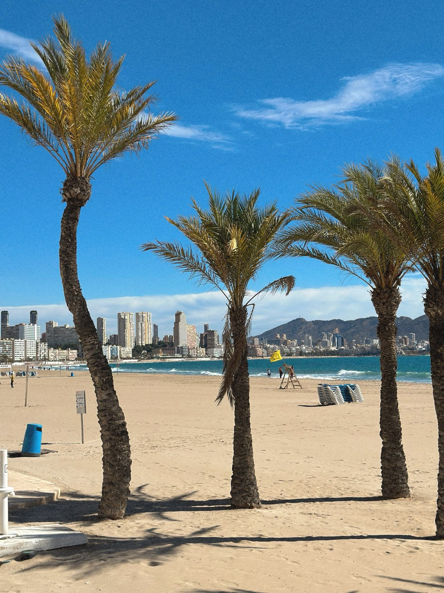
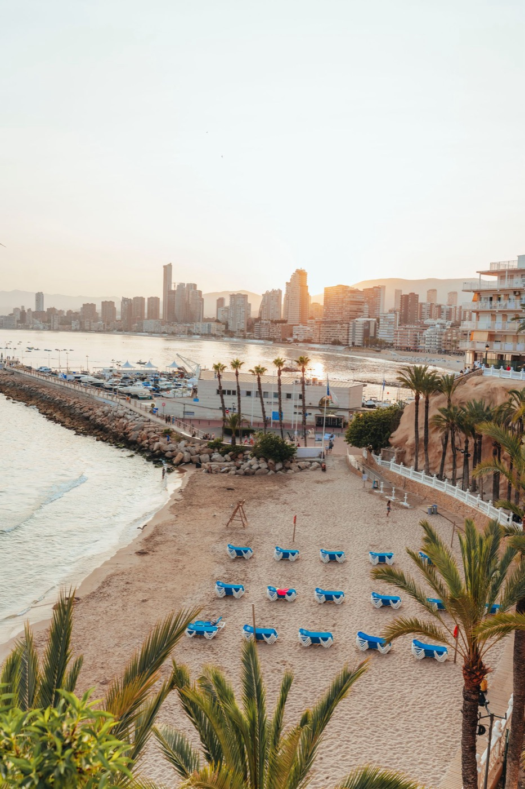
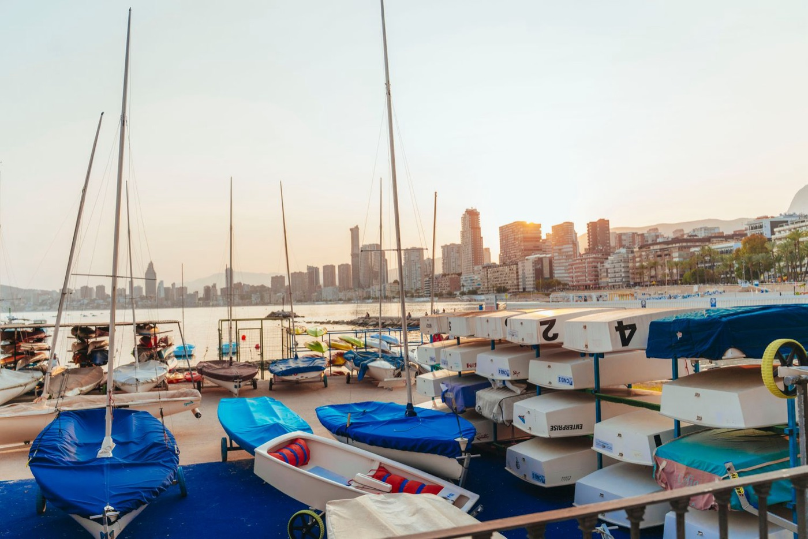
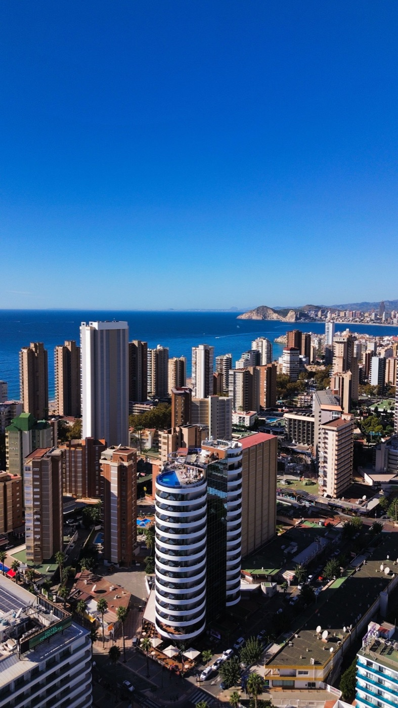

Costa Blanca · Spain
Benidorm
Two sweeping bays, 300+ days of sun and a skyline like nowhere else. Here's where our homes are, and what to do around them.
Benidorm, beyond the postcard

Playa de Levante
The lively golden crescent, sun all day, promenade cafés, and the buzz of the resort at its best.

Playa de Poniente
The calmer, wider bay, family sands, the Intempo skyline and long sunset walks.

Casco Antiguo
Whitewashed lanes, tapas bars and the Balcón del Mediterráneo between the two beaches.

Rincón de Loix
Quieter resort complexes with pools, a short stroll to the far end of Levante beach.
Things worth doing
The Balcón del Mediterráneo
The white viewpoint between the two beaches, the classic Benidorm postcard at sunset.
Old-town tapas
Wind through the casco antiguo for tascas, vermút and the freshest seafood.
Sierra Helada trails
Walk the cliffs above Levante for views across the whole bay to the island.
Isla de Benidorm
Hop the little ferry to the island for snorkelling and a slower afternoon.
Theme parks
Terra Mítica, Aqualandia and Terra Natura, a short drive, big day out.
Poniente sunsets
The wide western beach is the place to be as the sun drops into the sea.
Benidorm in pictures





